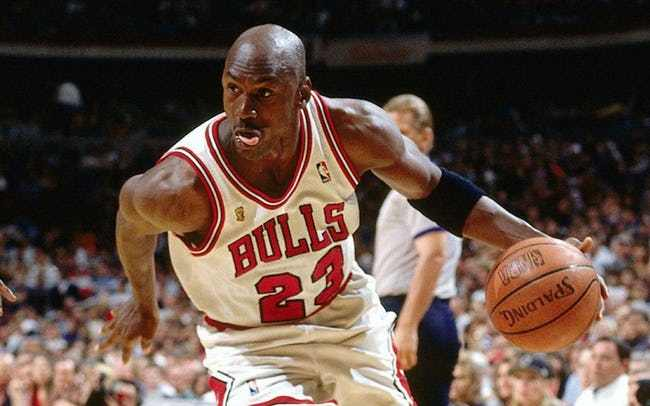
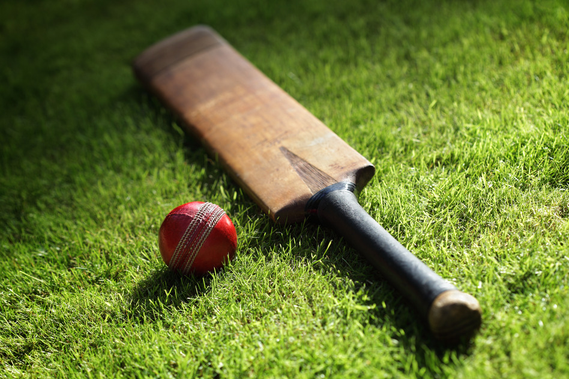
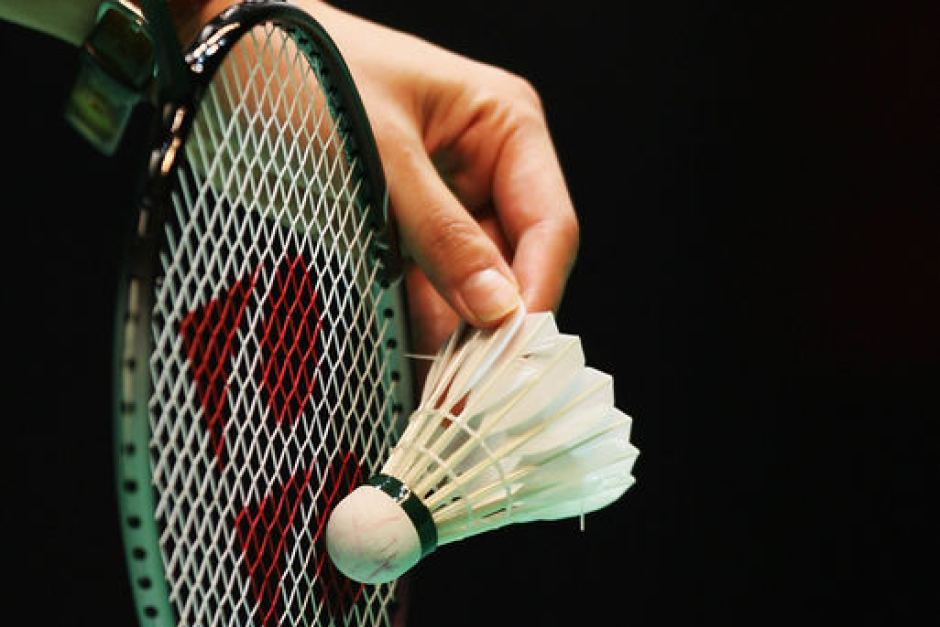
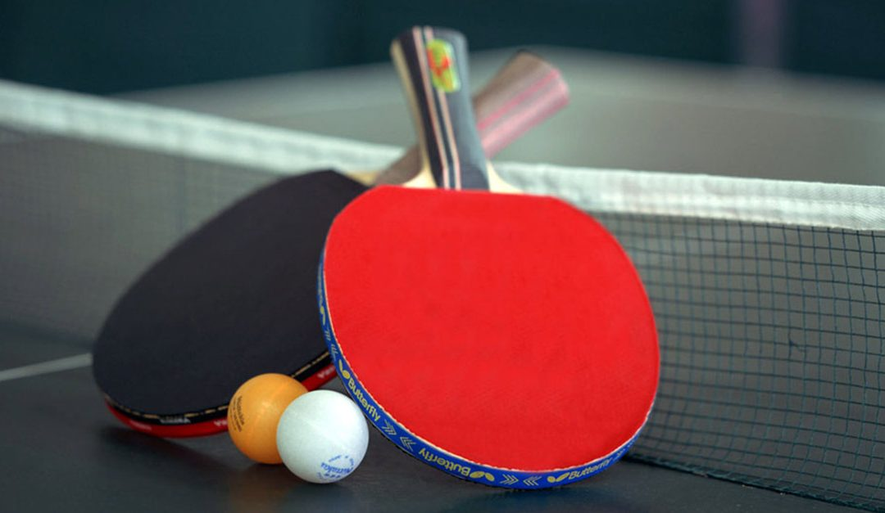

FOOTBALL

Association football, more commonly known as football or soccer, is a team sport played between two teams of eleven players with a spherical ball. It is played by 250 million players in over 200 countries and dependencies, making it the world's most popular sport.The game is played on a rectangular field with a goal at each end. The object of the game is to score by moving the ball beyond the goal line into the opposing goal.
BASKETBALL

Basketball is a team sport in which two teams of five players, opposing one another on a rectangular court, compete with the primary objective of shooting a basketball (approximately 9.4 inches (24 cm) in diameter) through the defender's hoop (a basket 18 inches (46 cm) in diameter mounted 10 feet (3.048 m) high to a backboard at each end of the court) while preventing the opposing team from shooting through their own hoop. A field goal is worth two points, unless made from behind the three-point line, when it is worth three. After a foul, timed play stops and the player fouled or designated to shoot a technical foul is given one or more one-point free throws. The team with the most points at the end of the game wins, but if regulation play expires with the score tied, an additional period of play (overtime) is mandated.
CRICKET

Cricket is a bat-and-ball game played between two teams of eleven players. It is set on a cricket field centred on a 20-metre (22-yard) pitch with two wickets each comprising a bail balanced on three stumps. For each phase of play, or innings, a batting side tries to score as many runs as possible after striking the cricket ball thrown at the wicket (or delivery) with the bat, while a bowling and fielding side tries to prevent this and dismiss each player (so they are "out"). Means of dismissal can include being bowled, when the ball directly hits the stumps and dislodges the bails, and by the fielding side catching the ball after it is hit by the bat, but before it hits the ground. When ten players have been dismissed, the innings end and the teams swap roles. The side with the most runs generally wins, though there are exceptions where the game is drawn instead. The game is adjudicated by two umpires, aided by a third umpire and match referee in international matches. They communicate with two off-field scorers (one per team) who record all the match's statistical information.
BADMINTON

Badminton is a racquet sport played using racquets to hit a shuttlecock across a net. Although it may be played with larger teams, the most common forms of the game are "singles" (with one player per side) and "doubles" (with two players per side). Badminton is often played as a casual outdoor activity in a yard or on a beach; formal games are played on a rectangular indoor court. Points are scored by striking the shuttlecock with the racquet and landing it within the opposing side's half of the court.Each side may only strike the shuttlecock once before it passes over the net. Play ends once the shuttlecock has struck the floor or if a fault has been called by the umpire, service judge, or (in their absence) the opposing side.
INDOOR GAMES
TABLE TENNIS

Table tennis, also known as ping-pong, is a sport in which two or four players hit a lightweight ball back and forth across a table using small bats. The game takes place on a hard table divided by a net. Except for the initial serve, the rules are generally as follows: players must allow a ball played toward them to bounce one time on their side of the table, and must return it so that it bounces on the opposite side at least once. A point is scored when a player fails to return the ball within the rules. Play is fast and demands quick reactions. Spinning the ball alters its trajectory and limits an opponent's options, giving the hitter a great advantage.
CARROM

Carrom (also spelled carom) is a cue sport-inspired tabletop game of South Asian origin. The game is very popular in Afghanistan, Nepal, India, Pakistan, Sri Lanka, Bangladesh, and surrounding areas, and is known by various names in different languages. In South Asia, many clubs and cafés hold regular tournaments. Carrom is very commonly played by families, including children, and at social functions. Different standards and rules exist in different areas.
CHESS

Chess is a two-player strategy board game played on a chessboard, a checkered gameboard with 64 squares arranged in an 8×8 grid.[1] The game is played by millions of people worldwide. Chess is believed to have originated in India sometime before the 7th century. The game was derived from the Indian game chaturanga, which is also the likely ancestor of the Eastern strategy games xiangqi, janggi, and shogi. Chess reached Europe by the 9th century, due to the Umayyad conquest of Hispania. The pieces assumed their current powers in Spain in the late 15th century; the rules were standardized in the 19th century.